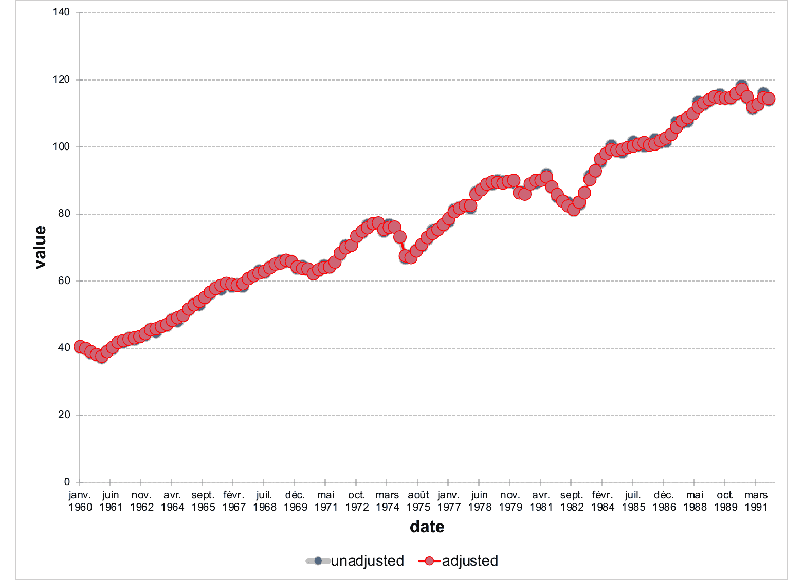

Creation of a linechart object that can be inserted in a 'Microsoft' document.
In a line chart, category data is distributed evenly along the horizontal axis, and all value data is distributed evenly along the vertical axis. Line charts can show continuous data over time on an evenly scaled axis, so they're ideal for showing trends in data at equal intervals, like months and quarters.
ms_linechart(data, x, y, group = NULL, labels = NULL)
Arguments
| data | a data.frame |
|---|---|
| x | x colname |
| y | y colname |
| group | grouping colname used to split data into series. Optional. |
| labels | colnames of columns to be used as labels into series. Optional. If more than a name, only the first one will be used as label, but all labels (transposed if a group is used) will be available in the Excel file associated with the chart. |
Illustrations

See also
chart_settings(), chart_ax_x(), chart_ax_y(),
chart_data_labels(), chart_theme(), chart_labels()
Other 'Office' chart objects:
ms_areachart(),
ms_barchart(),
ms_scatterchart()
Examples
library(officer) # example chart_01 ------- chart_01 <- ms_linechart( data = us_indus_prod, x = "date", y = "value", group = "type" ) chart_01 <- chart_ax_x( x = chart_01, num_fmt = "[$-fr-FR]mmm yyyy", limit_min = min(us_indus_prod$date), limit_max = as.Date("1992-01-01") ) chart_01 <- chart_data_stroke( x = chart_01, values = c(adjusted = "red", unadjusted = "gray") ) chart_01 <- chart_data_line_width( x = chart_01, values = c(adjusted = 2, unadjusted = 5) ) chart_01 <- chart_theme(chart_01, grid_major_line_x = fp_border(width = 0), grid_minor_line_x = fp_border(width = 0) ) # example chart_02 ------- data <- data.frame( supp = factor(rep(c("OJ", "VC"), each = 3), levels = c("OJ", "VC")), dose = factor(rep(c("low", "medium", "high"), 2), levels = c("low", "medium", "high")), length = c(13.23, 22.7, 24.06, 7.98, 16.77, 26.14), label = LETTERS[1:6], stringsAsFactors = FALSE ) chart_02 <- ms_linechart( data = data, x = "dose", y = "length", group = "supp", labels = "label" ) chart_02 <- chart_ax_y( x = chart_02, cross_between = "between", limit_min = 5, limit_max = 30, num_fmt = "General" ) chart_02 <- chart_data_labels( x = chart_02, position = "l" )